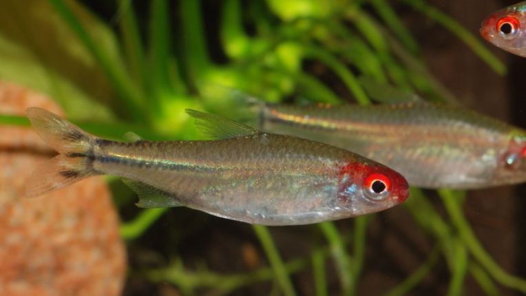

Systématique
- Ordre : Characiformes
- Famille : Characidae
- Genre : Hemigrammus
- Espèce : H. rhodostomus

Hemigrammus rhodostomus, le "vrai" Nez rouge, est un characidé emblématique des aquariums amazoniens. Il fait partie d'un complexe de trois espèces très similaires (avec H. bleheri et Petitella georgiae) que l'on confond souvent.
Il mesure environ 4 à 5 cm. Il possède un corps argenté fuselé, une nageoire caudale marquée d'un motif en damier noir et blanc, et surtout une tête rouge vif.
La distinction se fait sur l'étendue du rouge : chez H. rhodostomus, le rouge couvre le museau et l'iris mais s'arrête généralement avant l'opercule (contrairement à H. bleheri où le rouge dépasse largement les branchies).
C'est un excellent indicateur de la qualité de l'eau : si le poisson est stressé ou si les nitrates montent, son nez rouge pâlit presque instantanément.
C'est sans doute l'un des poissons les plus grégaires en aquarium d'eau douce. Il a un besoin impératif de vivre en banc serré (minimum 10 à 15 individus, idéalement plus).
Contrairement à d'autres tétras qui s'éparpillent, les Nez rouges nagent presque toujours ensemble de manière synchronisée, parcourant inlassablement la longueur de l'aquarium. Très pacifique et actif, c'est le poisson de banc par excellence pour les grands bacs communautaires.
Mode : ovipare.
La reproduction est réputée difficile et exigeante. Elle nécessite une eau très douce (GH < 2) et acide (pH 5,5 - 6,0), souvent filtrée sur tourbe.
C'est un diffuseur d'œufs. Le couple pond parmi les plantes fines. Les œufs sont photosensibles (craignent la lumière). Les parents mangent les œufs s'ils ne sont pas retirés.
Dimorphisme sexuel : Peu marqué. Les femelles matures sont généralement plus rondes au niveau de l'abdomen que les mâles, qui restent plus sveltes.
Espérance de vie : Environ 4 à 6 ans si les paramètres sont optimaux.
Il est originaire du bassin inférieur de l'Amazone et de l'Orénoque (Brésil et Venezuela). Il vit dans les eaux noires et claires, acides et peu minéralisées.
Répartition

Origine naturelle :
- Amérique du Sud.
- Brésil (Bas Amazone, Rio Pará).
- Venezuela (Bassin de l'Orénoque).
Paramètres de maintenance
Température : 24 à 28 °C (craint les chocs thermiques).
pH : 5,5 à 7,0 (préfère une eau acide).
GH : 2 à 10 °dGH (eau douce requise).
Pollution : Très sensible aux nitrates (> 20-25 mg/L).
Volume conseillé : Minimum 80 à 100 L. En raison de sa nage active en banc, une façade d'au moins 100 cm est fortement recommandée pour apprécier son comportement.
Régime alimentaire
Régime : omnivore.
Dans la nature, il se nourrit de petits vers, crustacés et plantes.
En aquarium, il accepte tout (paillettes, granulés) mais possède une petite bouche. Une alimentation riche en proies vivantes ou congelées (daphnies, artémias, cyclops) renforce l'intensité du rouge de sa tête.